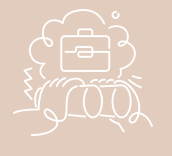
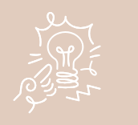

Visión
Mi visión como profesional es desafiar las fronteras establecidas y demostrar que los límites están
hechos para romperse. En los próximos años, me veo como una programadora de software innovadora, con
un profundo conocimiento en mi campo y una habilidad excepcional para comunicar ideas. Mi trabajo estará
enfocado en desarrollar soluciones que empoderen a las personas y amplíen las posibilidades para
todos, para "Que nadie te diga que el límite es el cielo, cuando hay huellas en la luna". Mi objetivo
es dejar un mensaje significativo en el mundo, contribuyendo a la transformación del panorama
tecnológico y social.

Misión
Como desarrolladora fullstack, mi objetivo es utilizar mis habilidades técnicas junto con
empatía, perseverancia y mi capacidad para comunicar ideas de manera clara y efectiva, inspirar a
otros a perseguir sus propias metas y superar los desafíos con creatividad y determinación. Estoy enfocada a
contribuir al avance del panorama tecnológico, creando herramientas y plataformas que amplíen las
posibilidades para todos, asegurándome de que nadie se sienta limitado por las barreras tradicionales.
Al hacerlo, espero dejar un legado significativo que demuestre que, con la determinación correcta, no
hay fronteras que no se puedan superar.
